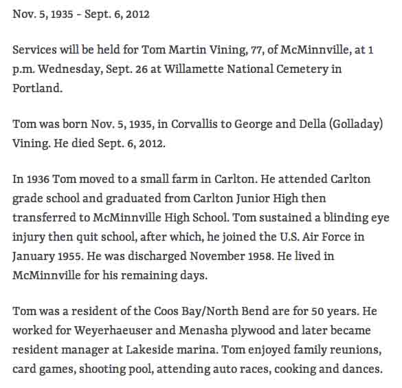

Census Data
| 1930 | 1940 | |
| George Robert Vining | 32 | 42 |
| Fidella Emmaline (Golladay) Vining | 35 | 45 |
| Sarah Pearl Vining | 16 | [living? in separate household] |
| Vera I. Vining | 15 | [living? in separate household] |
| Quay Vining | 14 | [living? in separate household] |
| Charles C. Vining | 11 | [living? in separate household] |
| Wilma I. Vining | 1 y., 5 m. | 11 |
| Marvin D. Vining | 9 | |
| Ronald Reece Vining | 6 | |
| Tom Martin Vining | 4 | |
| Reta E. Vining | 0 m. | |
| Betty Vining |


Death Data
Headstone for George Robert Vining and Fidella Emmaline (Golladay) Vining, in Masonic Cemetery, McMinnville, Yamhill County, Oregon (from Find A Grave):
